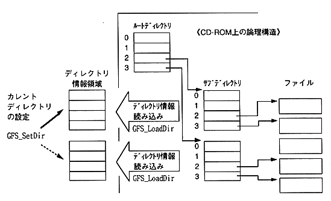

Return to previous page ｜ Return to menu ｜ Go to next page
-
3.3 Subdirectory operation
To access files in the - subdirectory, it is necessary to set the current directory information by calling the following function.
- Read directory information (GFS_LoadDir)
- Current directory setting (GFS_SetDir)
∙ You can use it by reading the directory information in advance and eliminating the CD-ROM access at the time of opening the file.
-
(1) Load directory information (GFS_LoadDir)
- Specify a sub-directory file to read and hold directory information.
At this time, the following two types can be selected as the directory information holding area.
(a)GFS_DIR_ID
- Does not retain the file name. Only access by file identifier is possible.
(b)GFS_DIR_NAME
- Since the file name is retained, a larger area than (a) is required.
- Access by file name is possible.
-
(2) Set current directory (GFS_SetDir)
- The directory information area read by GFS_LoadDir is the current directory.

Figure 3.2 Directory information settings
Return to previous page ｜ Return to menu ｜ Go to next page